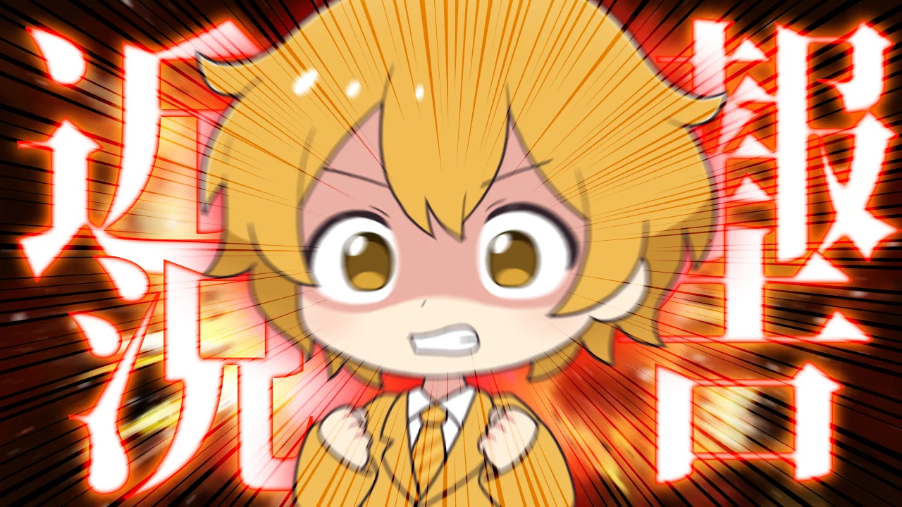
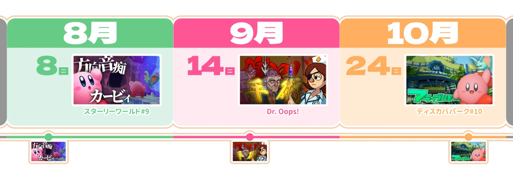
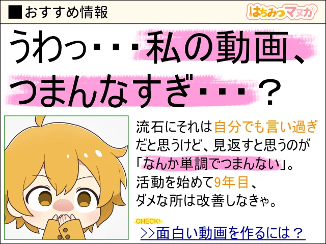
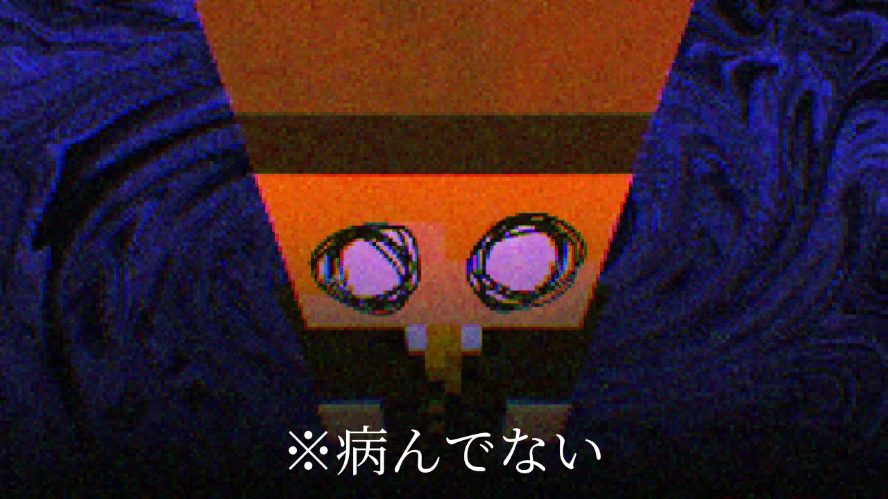
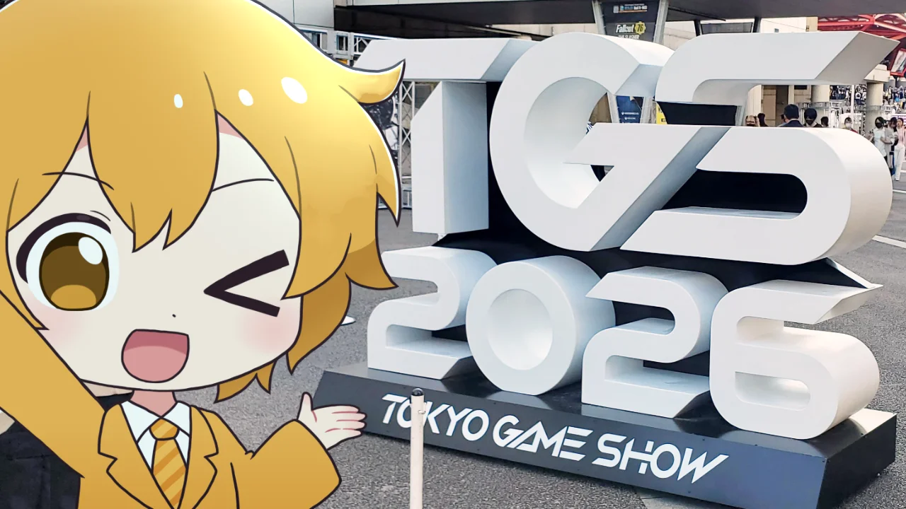
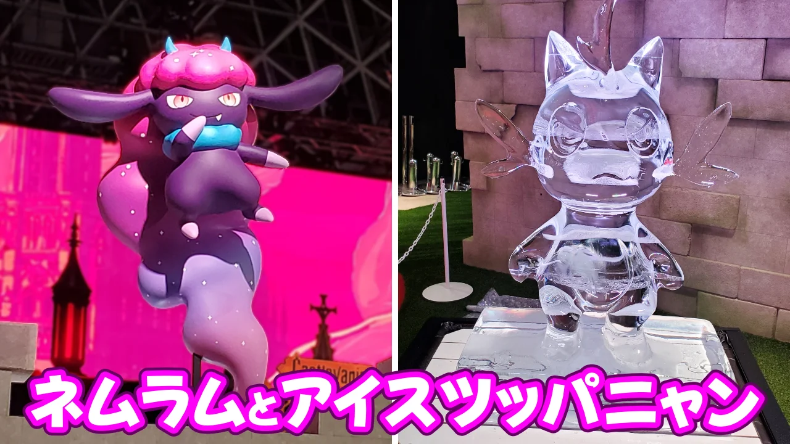
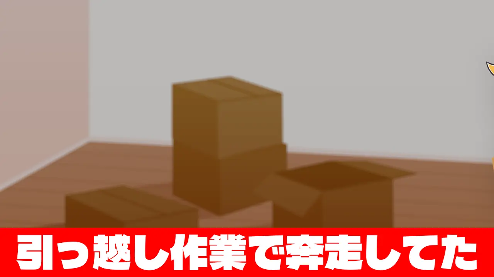
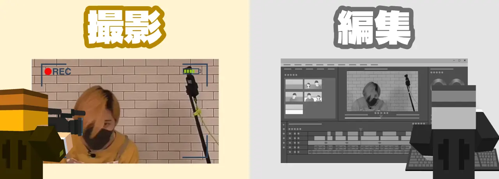
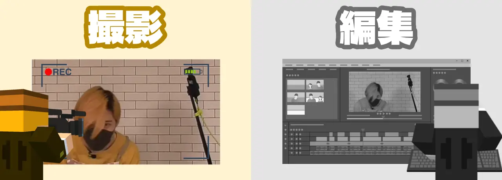
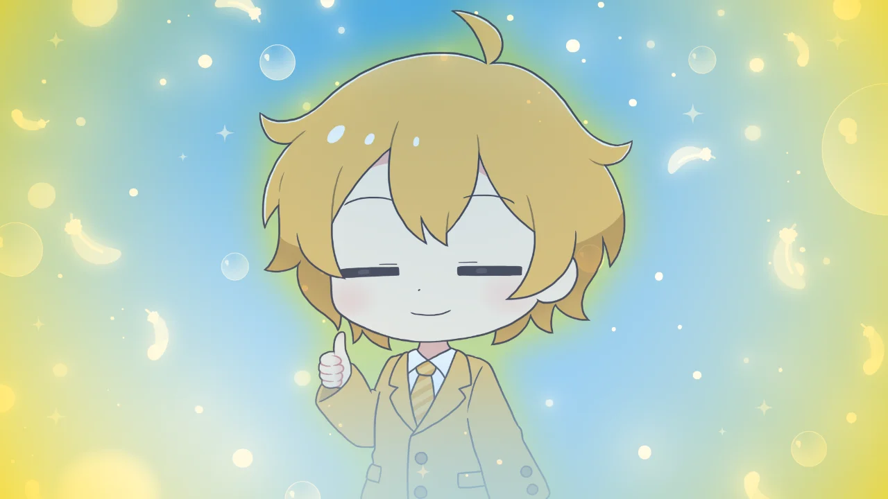

【近況報告】こいつ最近なにしてんの？？？
#日記
2026/10/26

Youtubeで生存確認をされている男
どうもはちみつです。
みなさんは最近なにしてますか？
僕はよくYoutubeで活動をしているのですが、逆にその他のSNSでの活動をあんまりしていないんですよね。
だから、動画が上がっていないと『何かあったのではないか』と思われる事が多いのです。
しかも...
身内にすらそう思われてます
...まぁ実際、先日アップした▼の動画でめっちゃ心配のコメントをもらいました。スマン
はちみつさんは元気ですし、もちろん動画投稿も続けるので安心してくださいね。
投稿間隔がめちゃ落ちた
確かにここ最近、投稿の頻度は落ちてきています。
この図を見てもらえると分かると思いますが・・・

最近は投稿間隔が1ヵ月以上開いちゃってました。
何故いきなりこんなにも変わってしまったのかと言いますと、この期間にかなり多くの出来事が重なってしまったことが原因なんですよね。
リアルで色々あったり、精神的にも色々あったり・・・＜病んではないよ！
そんなことが重なりまして、動画の制作が出来なかったり、今までよりも編集に時間がかかるようになってしまったのです。
今日はこの8月、9月、10月に一体なにをしていたのかという近況報告をしていこうと思います。
（念のため・・・何かイヤなことが起きたわけじゃないので、気楽に読んで大丈夫です～👍）
【8月】うわっ...私の動画...
さっきは『気楽に読んで』と言ったものの、この話は見る人によってはちょっと嫌かもしれないです。
動画をたくさん作ってると、やっぱり自分の生みだしたコンテンツに対して思う事もたくさん出てきます。
そこでこんなことを考えるようになっていきました。

ほら、こうやって散々擦られた古いネタを使ってる所からも分かる通り、僕はあんまり面白い事を言えるタイプじゃないと思っていてー・・・
自分の動画を見ていても『トーク、面白くないな』って思っちゃったりするんです。
ゆっくり実況においてトークはもちろん重要なものですから、そこがあんまりだな～って感じるという事は、
自分の動画
面白くないのかな

・・・なんて、傍から見れば「コイツ病んでんじゃねぇのか」みたいな思考回路に陥っていました。
別に自分を卑下している訳ではなくて、自分のコンテンツを客観的に見てそう思ってしまったというだけです。
なら、改善しよう！！！
はちみつさんは多分、周りと比べてインプットがめちゃくちゃ少ない人間なんですよね。
テレビとか見ないし、流行りのものとかも知らない事が多いです。
何度か言ってるけどアニメとか漫画とかも見ないし・・・
そこでこの期間はほかの人の動画を見てみたり、お笑いを見てみたり、色々なコンテンツを見ることにしました。本当は普段から見なきゃいけないけどね...
結果的に、悩んでいた「トーク力」は改善されなかった（たぶん）けど、普段とは違う事をしてみることでリフレッシュになってモチベーションは徐々に回復していきました。
もちろん多少なりとも得たものはあると思うけどね！
そうやってどうしたら面白い動画を作れるのか考えてはいたけど、自分の納得のいく動画が作れず動画の編集が手につかない期間が続いてしまった・・・
というのが、8月の出来事でした。
【9月】嬉しい事がいくつか
そんな状況下で迎えた9月、若干悩みの多かった8月と比べてすごく嬉しい事がいくつかありました。
先行体験のお誘い
これは実際には8月の真ん中くらいでお話を頂いていたのですが・・・
なんと、本当にありがたいことに『Dr. Oops!』というゲームの体験版をリリース前に頂き、実況するという機会が訪れました。
プレイしてみたらこのゲーム、マジで面白くて「面白さを伝えるために、動画も面白くしなきゃ！」って気持ちで、いつもより時間をかけて頑張って編集した結果・・・
納得のいく動画ができた！！！！！
当然、このゲームがとても面白かったからこそ面白い動画を作る事が出来たと思います。
でもここで1本1本の動画を時間かけて丁寧に作ることの大切さに気付くことも出来たのです。
だからこの後、今までの動画投稿の方針を変更することにして、
短い間隔でたくさん動画を作る
方針から・・・
時間をかけてより面白い動画を作る
というスタイルに変えることを決めました。
「Dr. Oops」はマジで面白いので、ぜひ体験版をプレイしてみてね！
TGSのお誘い
さらにさらに、動画でプレイしたパルワールドやクラフトピアの制作、Never Graveなどのパブリッシングを手掛けている株式会社ポケットペアさんに、
TGSへご招待いただきました！！！
▼Never Grave実況シリーズ
気になるゲームがあったので元々行こうとは思っていたのですが、まさかご招待いただけるとは思っていなかったのでめーーちゃくちゃ舞い上がりました。
という訳で、ワクワクしながらゲームショウへ向かったのです。

とにかく気になるブースを片っ端から巡りまして、ゲームの体験とかデバイスを見てみたりしてきました。
もちろん、ポケットペアさんのブースにも行ってきました！

ブースにUFOキャッチャーがあって、その上にネムラムがいたり・・・
氷でできたツッパニャンがだんだん溶けてビショビショになっててなんか面白かったです。
めちゃくちゃ大きいオブジェも沢山あって、いろんなパルが展示されててとにかくスゴかった！語彙
とにかくとっても楽しめたし、面白そうなゲームもたくさん見つけたのでかなり有意義な時間を過ごせました！
改めてご招待いただきありがとうございました～！！！🙇🙇🙇
そんなわけで、9月は嬉しい事が多かった月だったのです。
（ちなみに、TGSの写真がこれしか無いのははちみつさんが普段写真をあまり撮らないからです。もっと撮ってくれ）
【10月】突然の引っ越し
諸事情で急に引っ越さなければならない状況になりまして、10月はその引っ越し作業に追われていました。

ただ、ずーっと荷造りをするのも大変だし、その間Youtubeの活動をしないのも良くないなと思ったので・・・
引っ越し作業をやりつつ、空いた時間にプラネットコースターの撮影と編集を並行してやってました。
それがこの前の動画ですね。
ここで意外な気付きをしたんですけど、
『同時並行で作っていくのが自分に合ってるのでは？』
と思ったのです。
どういうことかと言いますと、編集のスタイルを変えてみたのです。

普段は撮影を全て済ませてから編集という流れで動画を作っているのですが、撮影の時点で「ここはこういう事を言おう」とか、「ここはこういう編集をしよう」みたいなことを撮影しながら考えるようにしているのです。
まぁ当然、忘れるよね。
撮影の時に考えてたことなんて少なくとも80%は忘れます。
特にプラネットコースターの撮影は何時間もやるので、後半の方とか編集の事を考えてない場合もあります。
だから今回のプラネットコースターの動画は、

撮影と編集を同時にやりました。
もちろん右手で撮影して左手で編集する桜井さんスタイルとかではなくて、「編集しながら使いたいと思った映像を細かく撮影して繋げていく」という方法で作ってみました。
つまり、撮影した動画に合わせて編集していくんじゃなくて、編集に合わせて動画を撮影していくという、今までと逆の方法で作っていったんですね。
なのであの動画は1～10分くらいのクリップを75本も撮りました。多い...
でも作っている間も完成した動画を見ても、この方法はかなり自分に合ってるんじゃないかなって感じたんですよね。
あとは引っ越し作業の合間にやったので、インスピレーションが湧かなかったりした時に別の事をするという同時並行も、かなりイイ感じでした。
ぜんぶYoutubeに繋がってた
思い返してみると、結局ずっとYoutubeの事考えながら過ごしてました。
自分の問題点もひとつ分かったし、より良い動画を作るための方法も見つけられたし・・・
やっぱりオレ、Youtubeが大好きなんだ・・・

以上、無事に成仏できたはちみつさんが天国からお送りいたしました。
地上のみなさんも頑張ってくださいね。